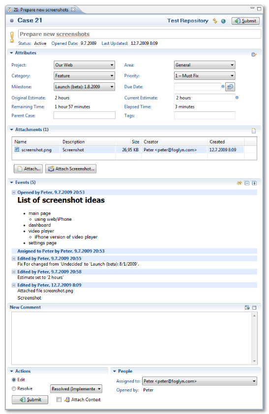
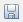

Foglyn User Guide > Editing FogBugz Cases


Editing FogBugz Cases
Case Editor is the most important part of Foglyn. It allows you to change your cases: add new comments, attach files or screenshots, reassign, resolve or close the case, change case attributes.
Case Editor can be opened by double-clicking the case in the Task List, or by Open Task dialog (mapped to CTRL+F12 by default).

Case editor has several sections:
- Header with case overview
- Attributes where case attributes like priority, target milestone or estimate can be changed
- Attachments which contains list of files attached to this case
- Events with chronological list of comments and edits
- New Comment for entering new comment
- Actions to select what to do with the case
- People for changing assignee
There is a difference between saving the editor (e.g. with  button), and submitting the case. Saving the editor stores your changes onto disk, but does not send them to FogBugz server. Saving the editor allows you to prepare your changes locally. Submitting the case does send the changes to the FogBugz repository.
Related Topics: